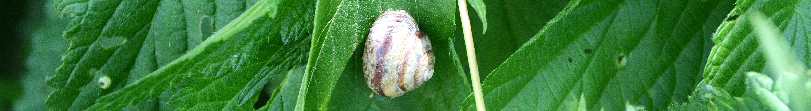
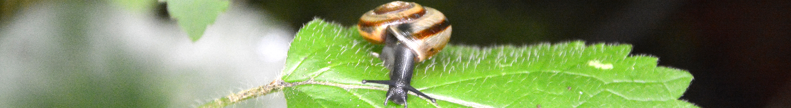
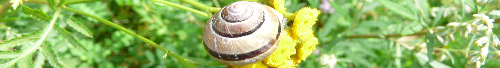
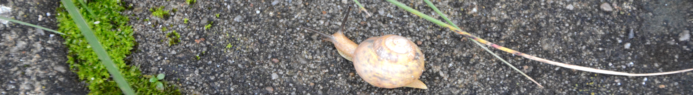
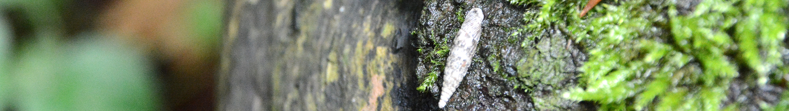

National Malacological Seminars – The Association of Polish Malacologists
Archive of the National Malacological Seminars organised by the Association of Polish Malacologists. Interactive seminar map and abstract books.













Archive of the National Malacological Seminars organised by the Association of Polish Malacologists. Interactive seminar map and abstract books.